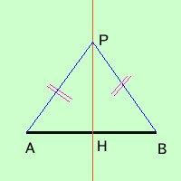

Come ipotesi abbiamo che il punto ha la stessa distanza dagli estremi del segmento; dobbiamo dimostrare che il punto allora si trova sulla perpendicolare condotta dal punto medio del segmento.
Dimostrazione O il punto P e' sul segmento oppure il punto P e' fuori del segmento Se il punto P e' sul segmento ed ha la stessa distanza dagli estremi del segmento allora e' il punto medio del segmento  se il punto P non e' sul segmento il triangolo PAB e' un triangolo isoscele e, per le proprieta' dei triangoli isosceli, la perpendicolare condotta dal vertice P taglia la base AB nel punto medio, quindi il punto di vertice P si trova sulla perpendicolare ad AB nel suo punto medio H, come volevamo |